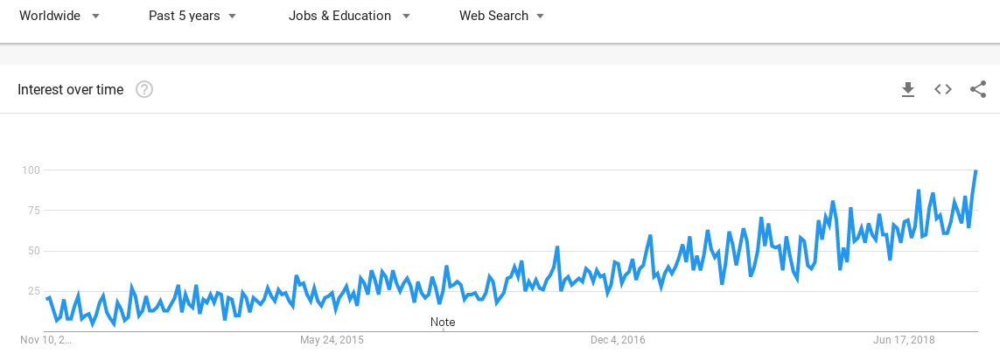
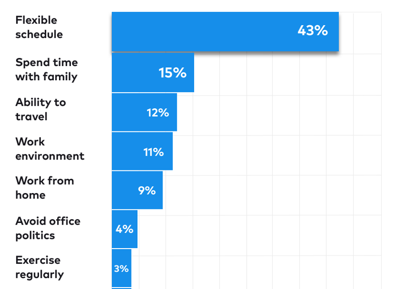

## Totally Networked Team > Remote work in Engineering is a growing trend. Companies that are embracing it learned that communication, decision making, social interaction and leadership strategies had to change. <br><br> Often, those cultural changes end up contributing to general improvements in management, information clarity and knowledge sharing. <!-- .element: class="fragment" -->
### About me <br> João Cavalheiro <br><br> * Engineering Manager @ SUSE * Remote manager of a remote team <br><br> twitter.com/jmcavalheiro <!-- .element: class="footnote" --> <br> linkedin.com/in/jmcavalheiro <!-- .element: class="footnote" -->
### SUSE <br><br> * [25 years of history] * World’s first provider of an Enterprise Linux distribution * Focused on mission-critical computing * OpenSource DNA * 1300+ people, many remote teams [25 years of history]: https://www.suse.com/company/history/
### Galaxy Team * 25+ developers, half remote * 2 managers * 7 locations * Agile: LeSS and Kanban [SUSE Manager]: https://www.suse.com/products/suse-manager/
## Remote Work
### A growing trend 
### Workforce scalability * Global work force * Grow while keeping the same office size * Many tech companies are already [remote friendly] * Private offices or open workspaces? - Stack Overflow says: [Go Remote] [Go Remote]: https://stackoverflow.blog/2017/04/14/cant-afford-private-offices/ [remote friendly]: https://github.com/remoteintech/remote-jobs
### Home office * Control over schedule * Custom work environment * More focus > "It can be quiet when you need quiet, or as loud as you want to make it when you want music"
### Benefits of working remotely  - Source: <!-- .element: class="footnote" --> [State of Remote Work 2018] [State of Remote Work 2018]: https://open.buffer.com/state-remote-work-2018/
## Challenges
### The missing connection * We are not designed for a life of total solitude * Communication is harder * Onboarding is harder * Sense of belonging can be affected
### It may not fit your processes <img data-src="http://chsorche.wwwss17.a2hosted.com/wp-content/uploads/2015/02/fullgroup.jpg"> Remote doesn't work well in highly synchronous environments <!-- .element: class="footnote" -->
### Serendipity > "Everyone’s sitting around a table, ideas are building on ideas, and intellectual sparks are lighting up the room" It’s tempting to think that this kind of magic only happens when people are in the same room.
## Part of the solution
### First principles * Flexible working hours * Free information flow * Asynchronous communication * Written conversations over verbal explanations * Written knowledge over on-the-job training * Results of work over the hours put in > What is not written does not exist <!-- .element: class="fragment" -->
### Hiring ##### Best chances are with people that: * are able to focus outside an office setup * are expressive and have good writing skills * have a sense of discipline and time management
### Onboarding * Prepare everything beforehand (hardware, welcome kit) * Have an onboarding guide and a FAQ * Always assign a mentor to the new person * Reserve dedicated time for pair-programming
### Communication > F2F communication relies on multiple physical queues to build trust ##### Office rules * One remote, all remotes * No shared camera : everyone connects from their laptop * IRC over in-person discussions * All documents are public and editable * Core office hours
### Meet regularly * Visit the office, as often as possible * Offsites * Hackweeks * When on same city, meet and work together
### Tools * Etherpad - shared notes * Wiki - source of truth * Mumble / Teamspeak * RFC model [example] [example]: https://github.com/cavalheiro/salt/blob/c055387879734ac416fe804b887a58a0d30fb566/rfcs/0000-template.md
### Rituals * Prepare yourself like if you were going to the office * Have regular working hours * Dedicated work area / room
## As a Manager
### Find the right balance * Manager schedule vs Maker schedule * A healthy team is your top priority * Reserve some time for technical insight
### Create Empathy * Make yourself always available * Set the tone for how to communicate early on * Create room for personal conversations * Embrace small talk * Show you care
### 1:1s * At least 30 min, every other week * Choose the right schedule * Preparation should include: - questions to ask - news to share - ideas to brainstorm * Write notes - don't miss the important stuff
## Embrace being behind a screen * No commuting time or stress * Less interruptions * Flexible location * Design your work environment <br><br>
## Thank you!